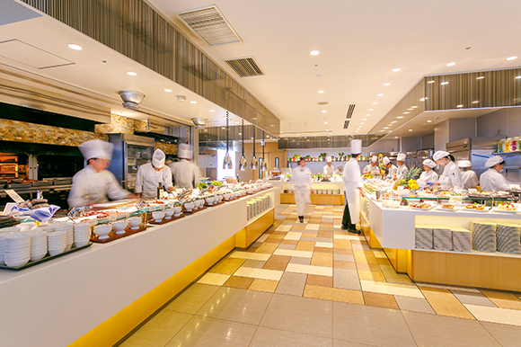
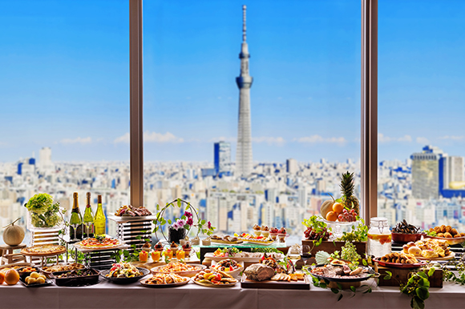
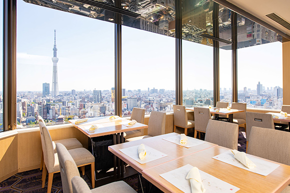
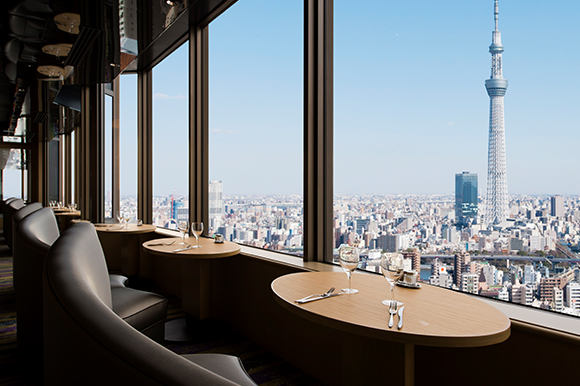
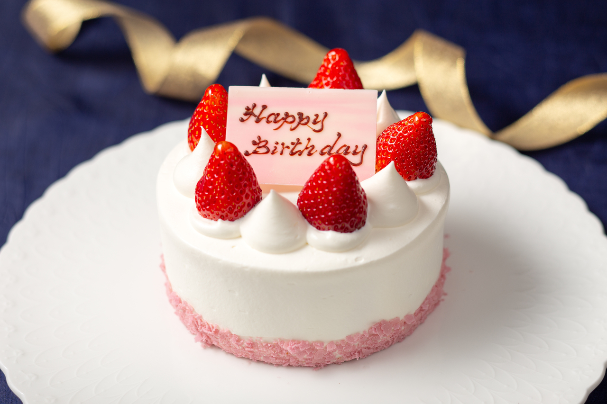
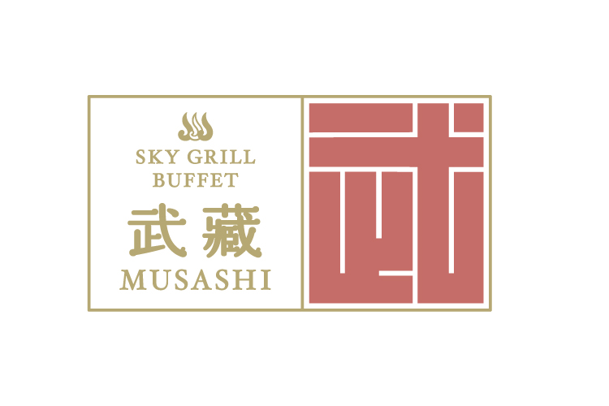
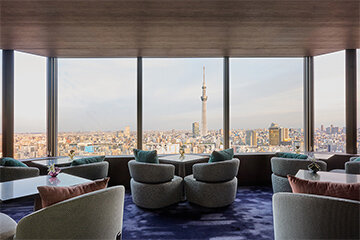
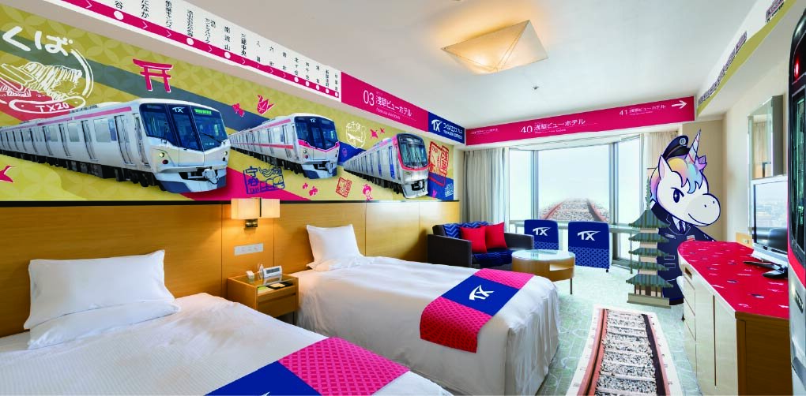
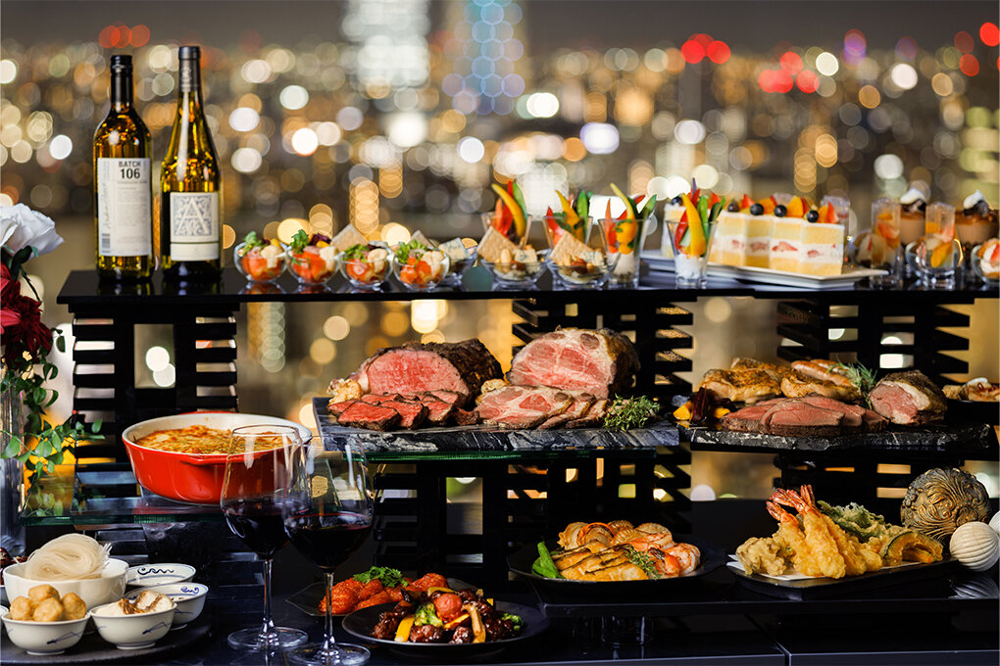
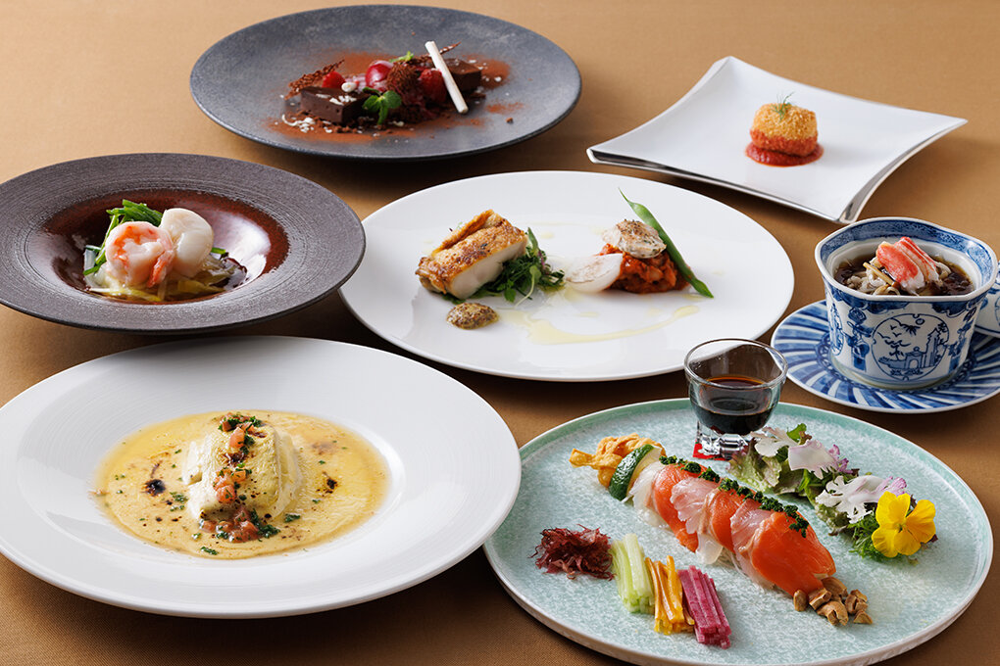

Galerie photos










Kevin, Loïc, May Nhia, Stéphanie, Estelle
Du 5 Avril au 27 Avril 2026
Grand buffet avec vue sur Tokyo Skytree, situé au 26e étage de l'Asakusa View Hotel, pratique pour un groupe avec réservation en ligne.










Sky Grill Buffet Musashi est une adresse efficace pour un groupe de 5 à Tokyo : buffet, grande vue en hauteur, service continu lunch/dinner et réservation web directe.
Conversion indicative sur base 1 EUR = 183.02 JPY (BCE du 04/03/2026). Taux variable.